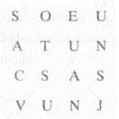

50. BÖLÜM
Langley, Virginia’daki CIA merkezinin derinliklerindeki bodrum kat ofisinde, on altı karakterden oluşan aynı mason şifresi, yüksek çözünürlüklü bir bilgisayar ekranında parlıyordu. Güvenlik Ofisi uzmanı Nola Kaye tek başına oturmuş, patronu Inoue Sato tarafından on dakika önce e-postayla gönderilen resmi inceliyordu.
Bu bir tür şaka mı? Elbette şaka olmadığını biliyordu; Başkan Sato espri anlayışından yoksun biriydi ve ayrıca bu akşamki olayların şakayla uzaktan yakından ilgisi yoktu. CIA’in her şeyi gören Güvenlik Ofisi’ne terfi etmesi, gücün karanlık dünyasını görmesini sağlamıştı. Ama son yirmi dört saat içinde tanık oldukları, güçlü insanların sakladığı sırlar konusundaki izlenimlerini tamamen değiştirmişti.
Sato’yla konuşurken, telefonu omzuna sıkıştırıp, “Evet efendim,” dedi. “Oymalar gerçekten de mason şifresi. Buna karşın, ortaya çıkan metin manasız. Rasgele harflerden oluşan bir sisteme benziyor.” Bakışlarını deşifre ettiği yazıya indirdi.

Sato, “Bir anlamı olmalı,” diye ısrar etti.
“Şu anda bilmediğim ikinci bir şifre katmam yoksa, bir anlam ifade etmiyor.”
Sato, “Bir şey tahmin edebiliyor musun?” diye sordu.
“Izgara sistemi üzerine oturtulmuş bir matris, bu yüzden Vigenère tablosu, kafes, ızgara gibi bir şeyler denerim ama söz veremem, özellikle de bir kereye mahsus kullanılmışsa.”
“Elinden geleni yap. Ve elini çabuk tut. Röntgen filminden haber var mı?”
Nola sandalyesini, birisinin çantasının güvenlik kontrolü filmim gösteren ikinci sisteme çevirdi. Sato, içinde küçük bir piramit varmış gibi gözüken küp şeklindeki kutu hakkında bilgi istemişti. Normalde, zenginleştirilmiş plütonyumdan yapılmadığı sürece sekiz santimlik bir nesne ulusal güvenlik meselesi sayılmazdı. Bu plütonyum değildi. Ama eşit derecede şaşırtıcı bir maddeden yapılmıştı.
Nola, “Görüntü yoğunluğu analizi kesin. Beker santimetre küpü on dokuz nokta üç gram. Saf altından oluşuyor. Çok çok değerli.”
“Başka bir şey?”
“Aslında evet. Yoğunluk taraması, altın piramidin yüzeyinde ufak düzensizliklere rastladı. Anlaşılan, altının üzerine bir metin kazınmış.”
“Öyle mi?” Sato’nun sesi ümitliydi. “Ne yazıyor?”
“Henüz söyleyemiyorum. Yazı son derece belirsiz. Filtrelerle büyütmeye çalışıyorum ama röntgen filminin çözünürlüğü pek iyi sayılmaz.”
“Tamam, denemeye devam et. Bir şey bulunca beni ara.”
“Peki efendim.”
“Ve Nola?” Sato’nun sesi ürkütücüydü. “Son yirmi dört saat içinde öğrendiğin her şey, taş piramidin ve altın kapak taşının görüntüleri en üst güvenlik seviyesinde sınıflandırıldılar. Hiç kimseye danışmayacaksın. Doğrudan bana rapor vereceksin. Bunun anlaşıldığından emin olmak istiyorum.”
“Elbette efendim.”
“Güzel. Beni haberdar et.” Sato telefonu kapattı.
Nola kızarıp sulanmış gözlerini ovuştururken bilgisayar ekranlarına baktı. Otuz altı saattir uyumuyordu ve bu kriz sona erene kadar uyuyamayacağını gayet iyi biliyordu.
Niyeyse...
Kongre Binası’nın ziyaretçi merkezinde, siyah zırhlı CIA operasyon ekibi tünelin girişinde durmuş, ava çıkmayı bekleyen köpekler gibi aç gözlerle loş koridora bakıyorlardı.
Telefonunu az önce kapatan Sato, yanlarına geldi. “Beyler,” derken Mimar’ın anahtarı hâlâ elindeydi. “Görev parametreleriniz anlaşıldı mı?”
Lider ajan, “Anlaşıldı,” diye cevap verdi. “İki hedefimiz var. Birincisi, yaklaşık otuz santim boyunda, üzerinde yazılar olan taş bir piramit. İkincisi daha küçük, yaklaşık beş santim boyunda küp şeklinde bir paket. Her ikisi de en son Robert Langdon’ın çantasında görüldüler.”
Sato, “Doğru,” dedi. “Bu iki nesne en kısa zamanda ve zarar verilmeden ele geçirilmeli. Sorunuz var mı?”
“Güç kullanma parametreleri?”
Sato, Bellamy’nin kemikle vurduğu yerin hâlâ zonkladığını hissediyordu. “Söylediğim gibi bu nesnelerin ele geçirilmesi azami önem taşıyor.” “Anlaşıldı.” Dört adam dönüp tünelin karanlığına girdiler.
Sato bir sigara yakıp, gözden kaybolmalarını izledi.